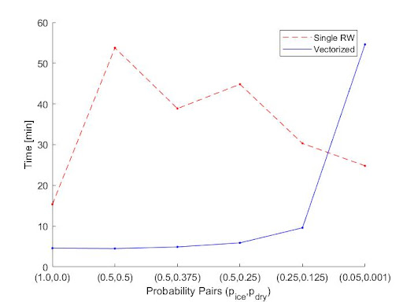
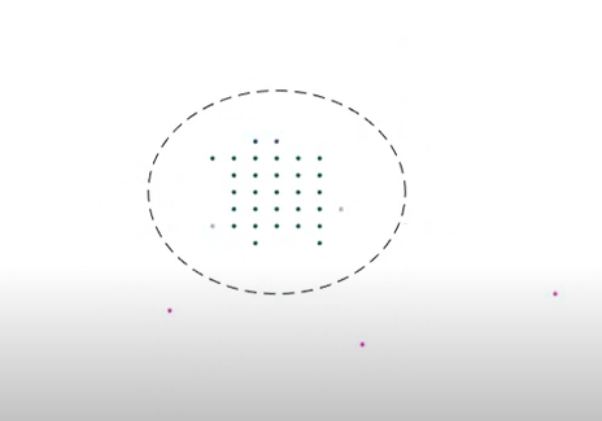
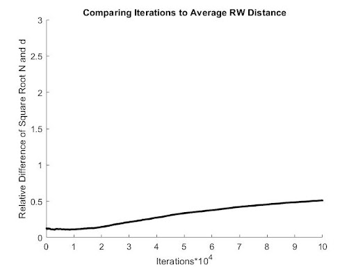
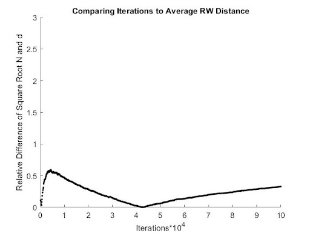
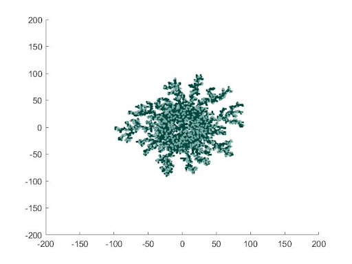
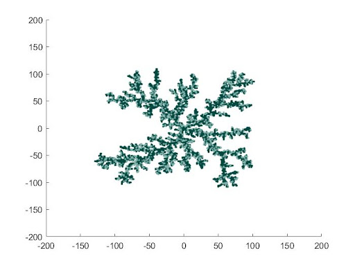

One important initiative that was taken to improve the
efficiency of the algorithm was vectorization. Vectorization
involves making use of arrays (and array operations) to have
multiple operations happen at once programmatically. This is
different from parallelization, which involves having
multiple operations run at the same time via multiprocessing
(distributing the processes on CPUs) and/or multithreading
(distributing the processes on several threads). While
parallelization can be more efficient since it separates
long-running processes into several short-running
subprocesses, vectorization was ultimately chosen to make
the algorithm more efficient. This is because
parallelization is best implemented when attempting to run
several `independent' subprocesses so that no overlaps or
`data races' occur, where two or more threads/CPUs are
running in the same process. In order to parallelize the
frosting model, multiple processes would have to be tracked
to ensure no overlapping, including the state of the frost
crystal and dry regions, the positions of all walkers, and
the radius of the circle at which walkers are released.
Vectorization allows for more efficiency and a way to
programmatically store the current states of the domain,
walkers, and radius, for every iteration.

Here is a plot of the time (minutes) each
algorithm (Single RW and Vectorized) takes to
complete for 6 different pairs of freezing
probabilities $p_{\text{ice}}$ and drying
probabilities $p_{\text{dry}}$.
\label{fig:comparingEfficiency}
Overall, some benefits of vectorization include more control
and flexibility, (generally) better efficiency, and (for
certain parameters) reproducibilty of the results from the
updated DLA algorithm. In fact, Figure
\ref{fig:comparingEfficiency} compares the amount of time it
takes to complete each algorithm (vectorized and
not-vectorized) for different pairs of fixed freezing and
drying probabilities, and for most probabilities (except
those near zero) the vectorized algorithm outperforms the
non-vectorized algorithm in efficiency. However, some
drawbacks include increased complexity, an exponential
decrease in efficiency for smaller freezing and drying
probabilities (as the figure also illustrates), and that
this vectorized algorithm is a slightly different process
from the updated DLA algorithm (which in fact must be
illustrated and shown to give similar results).
Vectorizing the Walkers

This image illustrates the movement of the
vectorized walkers (magenta), the ice particles
making up the frost crystal (dark cyan), and the
dry region (light cyan). The walkers all started
on the black dashed circle.
\label{fig:imageOfWalkers}
Figure \ref{fig:imageOfWalkers} gives an illustration of how
the vectorized walkers (magenta) move throughout a
fixed-size domain, and how they can create the frost regions
(dark cyan) and dry regions (light cyan) similar to the
previous algorithm that implements sticking probabilities
with DLA. The walkers all start on a circle of specified
radius to simulate coming from infinity (large relative to
the size of the frost domain), with all initial cell array
positions saved in a column array. In contrast to the
previous algorithm, the walkers are released at once, with
each walker still having a uniform chance of going into any
one of four coordinate directions (up/down/left/right) after
each iteration.
The vectorized walkers, walk, by updating the `walk'
function to take in the array of walker positions as input,
creating arrays for the x and y coordinates of these
positions, and adding either -1, 0, or 1 to each coordinate
such that each walker has a uniform probability of moving in
one of the four directions. Updating these coordinates for
every iteration is done with the following lines of MATLAB
code in the walk function.
\begin{lstlisting}
rx = randi([-1 0],1,particles) + randi([0 1],1,particles);
ry = zeros(1,particles);
ry(rx == 0) = randi([2 3],1,length( ry(rx == 0) ));
ry(ry == 2) = -1;
ry(ry == 3) = 1;
xNew = x + rx;
yNew = y + ry;
\end{lstlisting}
This code creates a vector {\fontfamily{qcr}\selectfont rx}
with elements that have a 1/4 chance to be -1, 1/4 chance to
be +1, and a 1/2 chance to be 0. This also creates a vector
{\fontfamily{qcr}\selectfont ry} with elements that are 0 in
the {\fontfamily{qcr}\selectfont rx} vector having a 1/2
chance of becoming either 1 or -1, and the rest of the
elements in {\fontfamily{qcr}\selectfont ry} remaining zero
since they are -1 or 1 in {\fontfamily{qcr}\selectfont rx}
(i.e. the walker moved in an x-direction already). By then
adding {\fontfamily{qcr}\selectfont rx} to the x coordinates
and {\fontfamily{qcr}\selectfont ry} to the y coordinates,
all the walkers walk to their next position. Most
importantly, for each walker, the probability of moving left
(right) is 1/4 since each element in
{\fontfamily{qcr}\selectfont rx} has a 1/4 chance of being
-1 (+1), and the probability of moving down (up) is 1/4
since each element in {\fontfamily{qcr}\selectfont ry} has a
(1/2 times 1/2) chance of being -1 (+1). Overall, each
walker moves with uniform probability in one of the four
coordinate directions.
Overall, while a few changes have been made to the nature of
the previous process of sending a single walker out one at a
time, a few features of these vectorized walkers remain
unchanged. This includes that any walkers which move beyond
the boundaries of the domain are made to go to the other
opposite boundary. Also, any walkers which step into a
forbidden region (ice or dry) move back/stay at their
previous locations. Stepping into a forbidden region only
happens when one or more walkers are adjacent to this
region, do not become ice or dry, and then step into the
region.
Updating the Sticking Probability
Whenever two or more walkers meet adjacent to the same ice
particle, the sticking probability is updated to include the
union probability of each walker sticking (i.e. if one
sticks they all stick). This is simply the probability that
at least one of $N$ walkers (that were adjacent) stick.
The probability that none of $N$ walkers stick is modeled by
a binomial distribution with zero `successes' ($k = 0$) and
success probability $\mathbb{P}_f \equiv \text{Freezing
Probability}$, i.e. $\mathbb{P}_0 = {N \choose 0}
{\mathbb{P}_f}^0 (1 - \mathbb{P}_f)^{N-0} = (1 -
\mathbb{P}_f)^N$. Therefore, the probability that at least
one walker sticks is simply $1 - \mathbb{P}_0$, which gives
the new sticking probability $\mathbb{P}$ of taking all $N$
walkers together as one:
\begin{equation}\label{eq:stickProb}
\mathbb{P} = 1 - (1-\mathbb{P}_{f})^N
\end{equation}
If this probability is satisfied, all the walkers stick. If
the probability is not satisfied, all the walkers also have
a probability to dry using the same probability model (with
$\mathbb{P}_f$ replaced by the fixed drying probability).
Otherwise, all walkers simply continue to walk together.
The process of having walkers adjacent to the same ice
particle, either walk together as one (i.e. removing all
duplicate positions in the cell array) or stick with this
new union probability, was chosen over simply having any
walkers that stick, stick, and any walkers that do not
stick, continue to walk (of course also having the
probability to dry). This is because any of those walkers
that continue to walk, may walk further into the forbidden
region and get trapped, since any walker which moves into
the forbidden region must move back to its previous location
(but the previous location may now be part of the frost
domain). While the event that two or more walkers meet and
are adjacent to the same ice particle is rare, even when
thousands of walkers are released at once, this event is
still considered in order to programmatically avoid any
walkers being trapped within the forbidden regions. This is
also an example of dealing with overlapping processes
programmatically.
Verifying the Diffusive Nature of
the Vectorized Walkers
Consider a single random walker which moves on a 2D lattice.
Since moving up or right increases the Manhattan distance by
1 (and moving down or left by -1 respectively), a random
walk on a 2D lattice can be modeled (proportionally) by the
already well-established 1D random walk (which either moves
left or right with equal probability $\frac{1}{2}$). Let's
denote the position of this 1D walker after an $n$ number of
iterations as $x_n$. Also, let $s_i = 1$ if the step at
iteration $i$ was to the right, and let $s_i = -1$ if the
step at iteration $i$ was to the left.
The average distance this 1D walker travels $\langle x_n
\rangle$ is shown here,
\begin{equation}\label{eq:stickProb}
\langle x_n \rangle = \langle \sum_{i=1}^{n} s_i \rangle = \sum_{i=1}^{n} \langle s_i \rangle = \sum_{i=1}^{n} \frac{1}{2}(-1) + \frac{1}{2}(1) = 0
\end{equation}
which is expected for a random walk which is equally likely
to move in any of two coordinate directions.
The average squared distance of the 1D walker, on the other
hand, is not zero and is shown here.
\begin{multline}\label{eq:stickProb}
\langle {x_n}^2 \rangle = \langle \sum_{i=1}^{n} \sum_{j=1}^{n} s_i s_j \rangle = \sum_{i=1}^{n} \langle {s_i}^2 \rangle + \sum_{i=1}^{n} \sum_{j>i}^{n} \langle s_i s_j \rangle\\
= \sum_{i=1}^{n} \left(\frac{1}{2}(-1)^2 + \frac{1}{2}(1)^2 \right) +\\ \sum_{i=1}^{n} \sum_{j>i}^{n} \left( \frac{1}{4}(1)(1) + \frac{1}{4}(-1)(1) + \frac{1}{4}(1)(-1) + \frac{1}{4}(-1)(-1) \right) \\
= n + 0 = n
\end{multline}
Therefore, the root mean square (rms) of the distance for
the 1D walker (as well as proportionally to the vectorized
walkers on the 2D lattice) is $d = \sqrt{\langle x_N
\rangle} = \sqrt{N}$.
To ensure that the code which creates and runs the
vectorized walkers still exhibit a diffusive nature, the
average distance a walker travels $d$ was compared with the
square root of the number of iterations $\sqrt{N}$, as the
number of iterations increases. These two variables should
tend to one another as $N$ approaches infinity, as developed
previously.

For walkers starting on a circle of radius 30,
the relative difference between the average
distance a walker travels $d$ and the square
root of the number of iterations $\sqrt{N}$, is
plotted versus the number of iterations that
have occurred. 5,000 walkers are used, and the
domain is 401 by 401.
\label{fig:diffusionWalkers30}

For walkers starting on a circle of radius 170,
the relative difference between the average
distance a walker travels $d$ and the square
root of the number of iterations $\sqrt{N}$, is
plotted versus the number of iterations that
have occurred. 5,000 walkers are used, and the
domain is 401 by 401.
\label{fig:diffusionWalkers170}
Figure \ref{fig:diffusionWalkers30} and Figure
\ref{fig:diffusionWalkers170} show the relative difference
between $d$ and $\sqrt{N}$ ($\text{Relative Difference} =
\frac{|d - \sqrt{N}|}{\sqrt{N}}$) for 5,000 vectorized
walkers which start on a circle of radius 30 and 170,
respectively. The standard domain of 401 by 401 is chosen
(200 from the origin on all sides), and there is no seed for
either radius because only the nature of the walkers is
being tested. As the plots show, while the relative
difference between $d$ and $\sqrt{N}$ does appear to be
increasing, it is relatively small with the average distance
never going beyond double $\sqrt{N}$ (i.e. the relative
difference remains below $1$). More importantly, the max
number of iterations for the walkers is usually fixed at
10,000, and as Fig.~(\ref{fig:diffusionWalkers30}) shows,
the relative difference remains quite small (below 0.25) for
the first 10,000 iterations. This is not the case for when
the radius is 170, which suggests that a smaller radius of
around 30 should initially be used (unless more iterations
are performed which could cost some extra time).
Implementing the Vectorized Walker
Batches

The vectorized algorithm with
{\fontfamily{qcr}\selectfont freezing} = 0.75,
{\fontfamily{qcr}\selectfont drying} = 0.25,
{\fontfamily{qcr}\selectfont nx = ny} = 200, $N$
= 5000 particles, {\fontfamily{qcr}\selectfont
max iterations per batch} = 10000, and
{\fontfamily{qcr}\selectfont walkers per batch}
= 5000.
\label{fig:tooManyWalkers}
Figure \ref{fig:tooManyWalkers} demonstrates what happens
when too many walkers (5,000) are released within an initial
radius of 30, which eventually grows over time as the
crystal increases. Even though a smaller radius of around 30
should be used to effectively simulate walkers coming from
infinity, if a lot of walkers are spawned with a relatively
small region, they are biased to all stick to the seed at
once. This bias can be fixed by releasing a smaller number
of walkers in groups or `batches', while still starting with
an initially small radius of 30 that grows relative to the
size of the crystal, and such that the walker spawning
circle remains a distance of 30 from the crystal.

The vectorized algorithm with
{\fontfamily{qcr}\selectfont freezing} = 0.75,
{\fontfamily{qcr}\selectfont drying} = 0.25,
{\fontfamily{qcr}\selectfont nx = ny} = 200, $N$
= 5000 particles, {\fontfamily{qcr}\selectfont
max iterations per batch} = 10000, and
{\fontfamily{qcr}\selectfont walkers per batch}
= 500.
The vectorized algorithm with
{\fontfamily{qcr}\selectfont freezing} = 0.75,
{\fontfamily{qcr}\selectfont drying} = 0.25,
{\fontfamily{qcr}\selectfont nx = ny} = 200, $N$
= 5000 particles, {\fontfamily{qcr}\selectfont
max iterations per batch} = 10000, and
{\fontfamily{qcr}\selectfont walkers per batch}
= 500.
Figure \ref{fig:enoughWalkers} shows the crystal formed when
a more reasonable number of walkers are released per batch
(500) with the same initial radius of 30. As shown, the
crystal grows similar to the updated DLA-like growth
expected. A comparison of the results from both algorithms
(vectorized and not-vectorized) for different fixed freezing
and drying probability pairs, can be found in the Results
section.
Overall, maintaining a small radius of 30 and releasing a
small number of walkers relative to the initial area within
the initial walker spawning circle, allows for the
vectorized walkers to effectively be used to create the
crystal in the most efficient and timely manner. Both
algorithms were worked on in parallel, and as discussed
previously, the results are compared in the Results section.